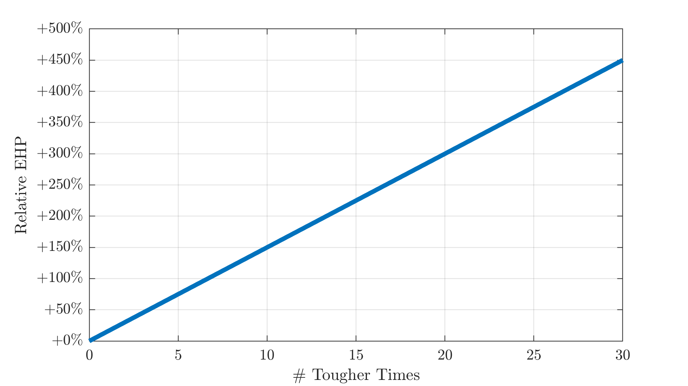
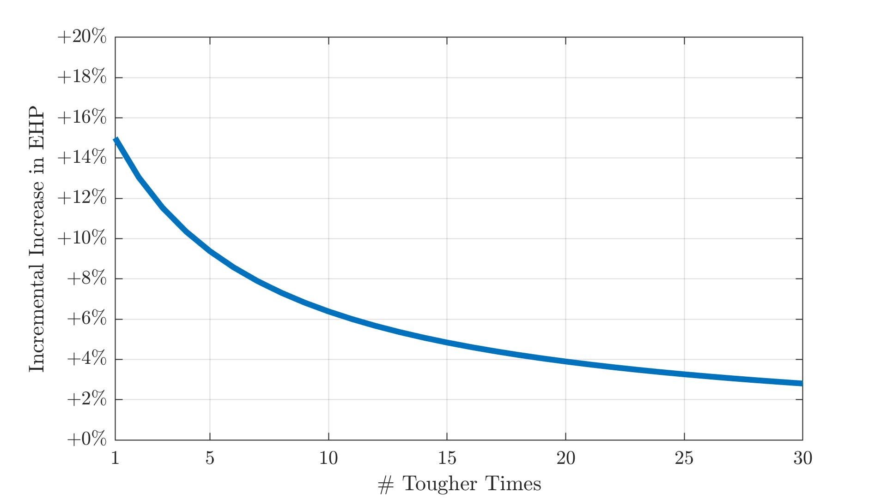

Tougher Times is a common item in Risk of Rain 2. It gives you a chance to completely ignore each instance of damage, with higher stack counts improving the odds.

Specifically, the chance to ignore damage is:
$$ P(\text{dodge}) = 1 - \left( \frac{1}{0.15n+1} \right) $$for \( n \) stacks. Some example values:
| Count | Dodge chance |
|---|---|
| 0 | 0% |
| 1 | 13.04% |
| 2 | 23.08% |
| 3 | 31.03% |
| 5 | 42.86% |
| 10 | 60.0% |
The percentage value increase starts at 13.04% and diminishes with each Tougher Times collected, approaching a 100% dodge chance as \( n \) grows arbitrarily large. This isn't a great metric, though - not all percentages are created equal. Consider a baseline 1000 HP, 0% dodge chance. Adding a 1% chance to ignore damage only slightly improves your survivability. But if you have a 98% dodge chance, adding "just" 1% to that doubles how many hits you can take on average. Another 1% makes you immortal. See also: evasion and EHP in Girls' Frontline. This can be calculated as
$$ \mathrm{EHP} = \frac{\mathrm{HP}}{\mathrm{Enemy~hit~rate}} = \frac{\mathrm{HP}}{1-\mathrm{Dodge~chance}} $$Let's plug the previous expression for Tougher Times in.
$$ \mathrm{EHP} = \frac{\mathrm{HP}}{1-\left( 1 - \left( \frac{1}{0.15n+1} \right) \right)} = \frac{\mathrm{HP}}{\left( \frac{1}{0.15n+1} \right)} = \mathrm{HP} \times ( 0.15n+1 )$$Graphically:

In other words: your effective HP increases linearly with the number of Tougher Times you have. At the same time, linear increases are less useful as you stack them higher and higher, in terms of the net effect. Similar case as almost any common item. Consider the gain in EHP from adding a single Tougher Time, by your total count:
$$ \mathrm{EHP~increase} = \frac{\mathrm{HP} \times ( 0.15n+1 )}{\mathrm{HP} \times ( 0.15(n-1)+1 )} = \frac{0.15n+1}{0.15(n-1)+1} = \frac{3}{3n+17}+1$$
The first one is indeed a 15% gain in EHP, but the overall percentage increase drops off after. (This is all about average performance, of course. Against particularly high-damage attacks variance will be much higher.)